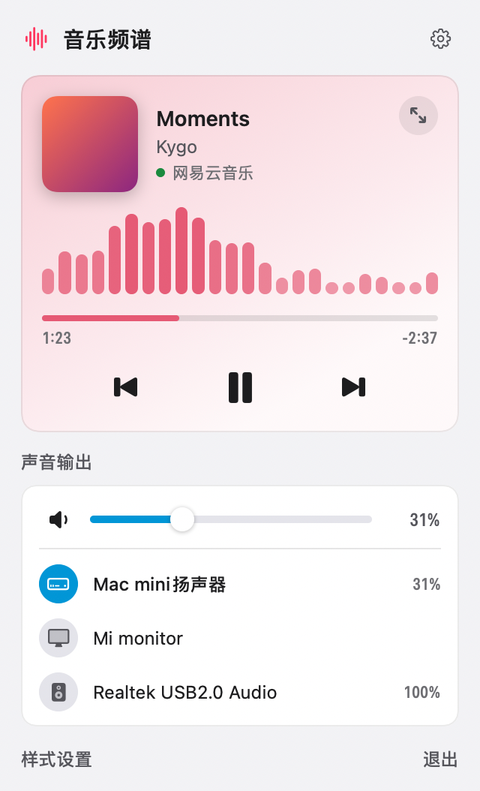
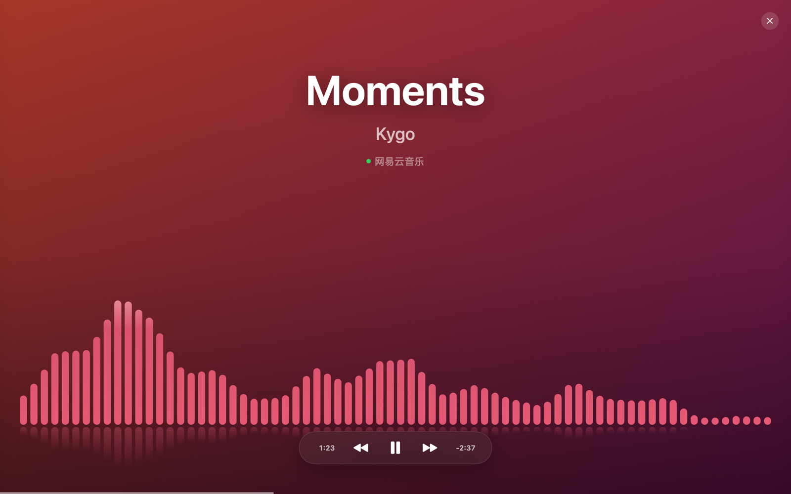

islet / 音乐与频谱
Mac 菜单栏显示正在播放的音乐和实时频谱
islet 会在菜单栏显示正在播放的歌曲封面和实时频谱，支持常见的音乐播放器，能切歌、暂停、调音量和切换输出设备，还可以全屏显示频谱。
菜单栏里看得到什么
- 封面和实时频谱，颜色取自封面，切歌时渐变。
- 显示此刻真正在出声的程序：游戏、剪辑软件出声时显示它们的图标。
- 按钮跟着应用实际支持的操作走：不能切歌的只显示播放和暂停。

面板里还能做什么
- 调音量、静音，点一下切换输出设备。
- 频谱样式、颜色、灵敏度都能在设置里调。
- 点放大按钮进入全屏频谱：封面做模糊背景，频谱铺满屏幕底部。

需要什么
实时频谱需要 macOS 14.2 或更新版本，第一次使用时要授予「系统录音」权限。islet 只读取电脑播放出来的声音来画频谱，不录麦克风，也不保存、不上传。